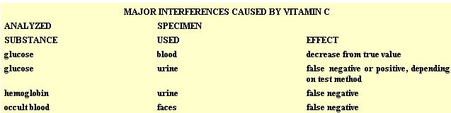

A medical technologist says that (at the wrong time) there can be too much of a good thing.
Imagine that you're about to undergo a routine physical exam and your doctor says, "Before I send you to the lab, tell me what drugs-including aspirin and antacids-you've taken in the last 48 hours." You smile and reply that you haven't needed medicine in months. After all, you've been taking good care of yourself: exercising, eating vitamin-packed food from your garden, and following wholistic health routines.
But wait, did you consider the vitamin C tablets you gulp down each morning? Well, you'd better mention them to your doctor, because that daily supplement could interfere with the accuracy of the tests!
Since 1970, when Linus Pauling first publicized vitamin C's role in helping the body fight the common cold, many individuals have made taking large doses of it part of their daily health regimen. Today, however, medical journals are alerting physicians and lab technologists to the effects of vitamin C on laboratory procedures.
LABORATORY INTERFERENCE
The various lab tests are important to every doctor's investigations, and false or unexpected results can seriously hinder a physician's overall interpretation of such reports.
To understand how vitamin C can skew the results of an examination, consider the following analogy: Let's say you have a sack containing a couple of hundred marbles. You'd like to know exactly how many are in the bag, but counting them one by one would be painfully slow. So you decide to weigh the whole package, subtract the weight of the sack, and then divide the remainder by the weight of one marble. It might go like this: Suppose the group weighs 1,656 grams (metric units simplify the math), and you find that one marble weighs nine grams. By dividing 9 into 1,656, you figure out that you have 184 marbles. But what happens if there's some mud on a few of the marbles? If, suppose, there happen to be 18 grams of dirt on the collection, you'll calculate-incorrectlythat you have 186 marbles.
And as researchers are now learning, vitamin C can "muddy" the chemicals being tested in some clinical laboratory tests, giving a falsely heightened result. Furthermore, in other situations vitamin C may actually impede chemical reactions . . . which, again, would influence the test results.
GLUCOSE TESTS
For example, during your regular physical exam, your doctor may check blood glucose to detect diabetes or hypoglycemia. Vitamin C can block relevant chemical reactions, which may lead to your registering an incorrectly low blood glucose value.
Then again, the physician may study your urine instead of your blood. Whenever glucose concentrations in the blood-stream rise extremely high-something that can happen if insufficient insulin is availablethe sugar is said to "spill over" into the urine. As is the case with blood glucose exams, urinary tests can produce false results when vitamin C obstructs chemical actions.
In fact, just two grams of vitamin C per day, taken orally, can cause a urinary sugar test to show positive results when no glucose is present. Another technique used commonly by diabetics testing themselves at home, and by many clinics, utilizes a chemical-coated strip that's dipped in the specimen. In this case, a vitamin C intake of two grams per day can produce a negative reading . . . even when glucose is present!
HIDDEN BLOOD TESTS
In 1975, researchers at the National Institute of Health reported the case of a female patient with unexplained anemia. She was examined for indications of internal bleeding, but-on four occasions-tests for occult (hidden) blood in her stools produced either negative or uncertain results. And yet the use of a different testing protocol on one of the same specimens gave strongly positive indications.
Then, during an interview, the patient disclosed that she was taking two grams of vitamin C per day as a nutritional supplement. Four days after she stopped taking the tablets, her fecal specimens yielded strongly positive results by all the lab techniques.
Another test for internal bleeding involves checking the urine for hemoglobin. This approach detects blood coming from the kidney or bladder, and it's one of the most important screenings that your urine sample will get in the laboratory. Unfortunately, vitamin C affects this test so strongly that as few as 250 milligrams, taken three times daily, can cause a false negative report.
OTHER INTERFERENCES
Although vitamin C also affects several other frequently used tests-such as those to detect certain enzymes, uric acid, and bilirubin-the changes are too slight to affect interpretation of the results. It does, however, strongly interfere with some less common tests, such as those for various drugs and for vitamin B, 12 . And as scientists continue their search for further consequences of large vitamin C intake, they'll probably find additional cases in which the supplement interferes with laboratory tests.
HOW TO DEAL WITH THE PROBLEM
In many cases, labs can either remove vitamin C and its derivatives from your samples or use methods that aren't susceptible to interference . . . but the technicians can do so only if they know that you've been taking the substance. Therefore, prior to having tests done, you should always review with your doctdr the amounts and types of vitamin supplements that you've been taking. However, to keep costs down-special laboratory work is always more expensive than are routine techniques-there's a good chance that your physician simply will advise you to stop taking the vitamins for two to three days prior to the exams. In short, by keeping well informed and acquainting your doctor with your dietary habits, you can play an active part on your health care team.
HOW VITAMIN C AFFECTS YOUR BODY
Maintainging an adequate level of vitamin C in your body is vital to your wellbeing. Even the chemical names for the substance suggest the importance it plays in good health: Asorbic acid and ascorbate are derived from antiscorbutic, which means "against scurvy"
In Vitamin C and the Common Cold , Dr. Linus Pauling concurred with Dr. Albert Szent-Györgyi, the man who first purified vitamin C from citrus fruit. Dr. Szent-Györgyi asserted that scurvy isn't the only ascorbate-deficiency symptom. Indeed, both Pauling and Szent-Györgyi think that extra vitamin C-beyond the Recommended Daily Allowance of 70 milligrams-may be necessary for maintenance of health.
Some of the roles that vitamin C plays (in addition to preventing scurvy) include aiding collagen formation . . . promoting the healing of wounds . . . increasing iron absorption in-the intestines . . . protecting important biomolecules . . . and altering
toxic materials. Vitamin C can also stimulate the immune system in several ways to help your body rid itself of viruses and unwated bacteria. Taking gram-size doses of ascorbic acid may also increase the amounts of several proteins that participate in the immune response, and the intake of a s much as three grams can heighten interferon production and white blood cell response to bacteria.
Most animals actually have built-in mechanisms that produce vitamin C in response to stress. Under adverse conditions, their livers are able to vastly increase formation of the substance. Unfortunately, humans lack the enzymes needed for this complex production process, so we must turn to other sources of the nutrient. To keep your body's vitamin C levels up, eat citrus fruits, cantaloupe, strawberries, tomatoes, broccoli, cabbage, sweet peppers, and leafy green vegetables . . . and, when necessary, supplement that natural intake with tablets.
|
 |
|
|